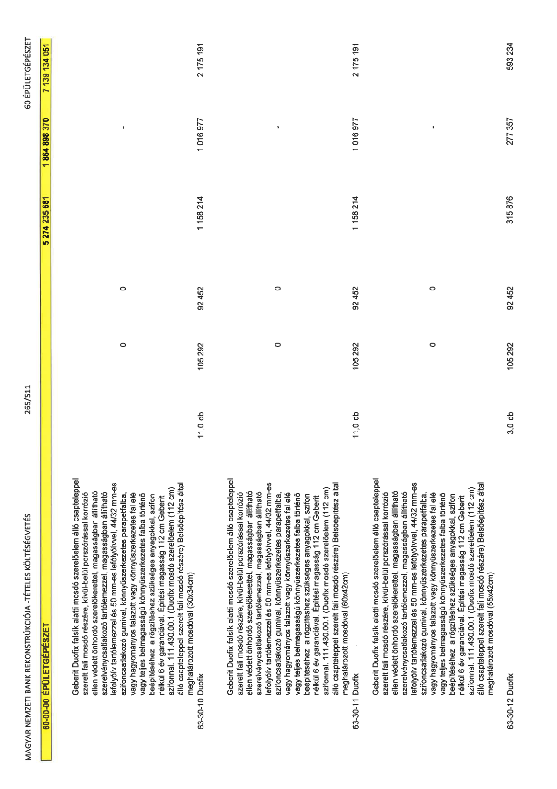

| Tétel | Menny. | Egys. | Anyag e.ár (net HUF) | Díj e.ár (net HUF) | Anyag összesen (net HUF) | Díj összesen (net HUF) | Anyag+Díj összesen (net HUF) |
|---|---|---|---|---|---|---|---|
| 60-00-00 ÉPÜLETGÉPÉSZET | NaN | NaN | 0 | 0 | 5 274 235 681 | 1 864 898 370 | 7 139 134 051 |
| Geberit Duofix falsík alatti mosdó szerelőelem álló csapteleppel szerelt fali mosdó részére, kívül-belül porszórással korrózió ellen védett önhordó szerelőkerettel, magasságban állítható szerelvénycsatlakozó tartólemezzel, magasságban állítható lefolyóív tartólemezzel és 50 mm-es lefolyóívvel, 44/32 mm-es szifoncsatlakozó gumival, könnyűszerkezetes parapetfalba, vagy hagyományos falazott vagy könnyűszerkezetes fal elé vagy teljes belmagasságú könnyűszerkezetes falba történő beépítéséhez, a rögzítéshez szükséges anyagokkal, szifon nélkül 6 év garanciával. Építési magasság 112 cm Geberit szifonnal. 111.430.00.1 (Duofix mosdó szerelőelem (112 cm) álló csapteleppel szerelt fali mosdó részére) Belsőépítész által meghatározott mosdóval (30x34cm) | 0 | 0 | 0 | 0 | 0 | 0 | 0 |
| 63-30-10 Duofix | 11,0 | db | 105 292 | 92 452 | 1 158 214 | 1 016 977 | 2 175 191 |
| Geberit Duofix falsík alatti mosdó szerelőelem álló csapteleppel szerelt fali mosdó részére, kívül-belül porszórással korrózió ellen védett önhordó szerelőkerettel, magasságban állítható szerelvénycsatlakozó tartólemezzel, magasságban állítható lefolyóív tartólemezzel és 50 mm-es lefolyóívvel, 44/32 mm-es szifoncsatlakozó gumival, könnyűszerkezetes parapetfalba, vagy hagyományos falazott vagy könnyűszerkezetes fal elé vagy teljes belmagasságú könnyűszerkezetes falba történő beépítéséhez, a rögzítéshez szükséges anyagokkal, szifon nélkül 6 év garanciával. Építési magasság 112 cm Geberit szifonnal. 111.430.00.1 (Duofix mosdó szerelőelem (112 cm) álló csapteleppel szerelt fali mosdó részére) Belsőépítész által meghatározott mosdóval (60x42cm) | 0 | 0 | 0 | 0 | 0 | 0 | 0 |
| 63-30-11 Duofix | 11,0 | db | 105 292 | 92 452 | 1 158 214 | 1 016 977 | 2 175 191 |
| Geberit Duofix falsík alatti mosdó szerelőelem álló csapteleppel szerelt fali mosdó részére, kívül-belül porszórással korrózió ellen védett önhordó szerelőkerettel, magasságban állítható szerelvénycsatlakozó tartólemezzel, magasságban állítható lefolyóív tartólemezzel és 50 mm-es lefolyóívvel, 44/32 mm-es szifoncsatlakozó gumival, könnyűszerkezetes parapetfalba, vagy hagyományos falazott vagy könnyűszerkezetes fal elé vagy teljes belmagasságú könnyűszerkezetes falba történő beépítéséhez, a rögzítéshez szükséges anyagokkal, szifon nélkül 6 év garanciával. Építési magasság 112 cm Geberit szifonnal. 111.430.00.1 (Duofix mosdó szerelőelem (112 cm) álló csapteleppel szerelt fali mosdó részére) Belsőépítész által meghatározott mosdóval (55x42cm) | 0 | 0 | 0 | 0 | 0 | 0 | 0 |
| 63-30-12 Duofix | 3,0 | db | 105 292 | 92 452 | 315 876 | 277 357 | 593 234 |
